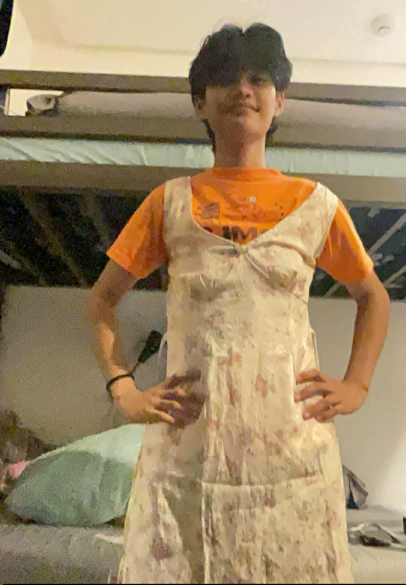
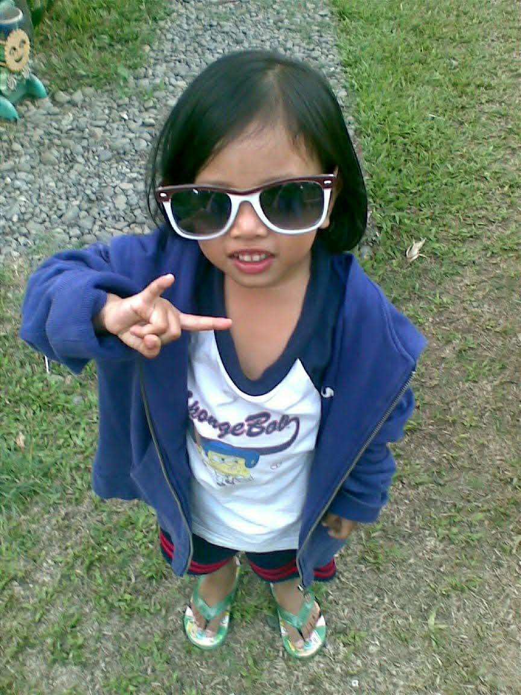
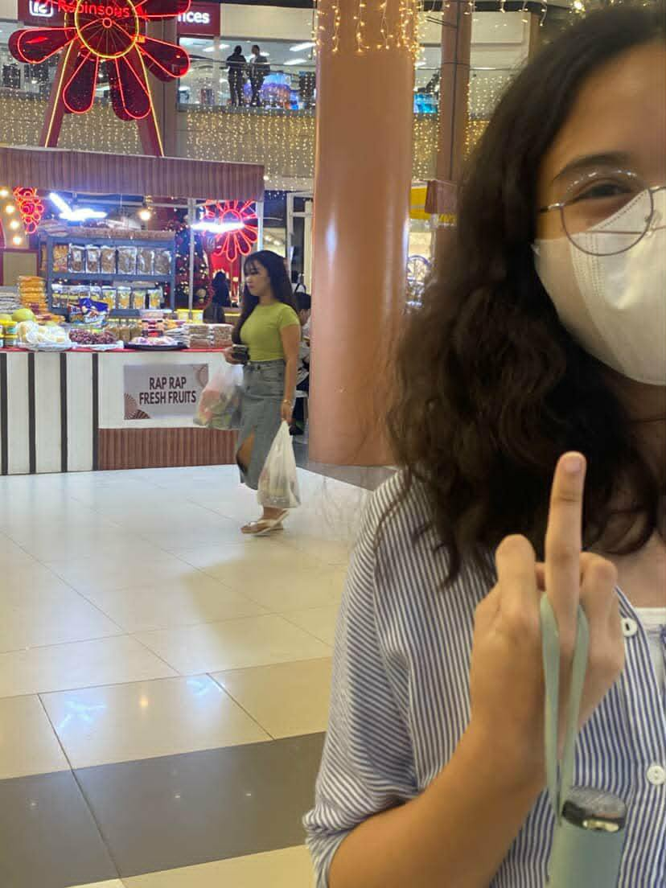
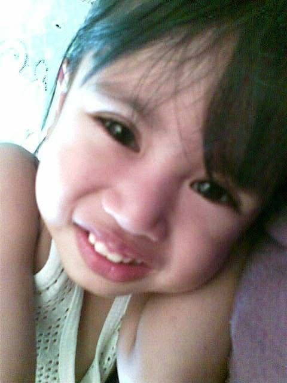
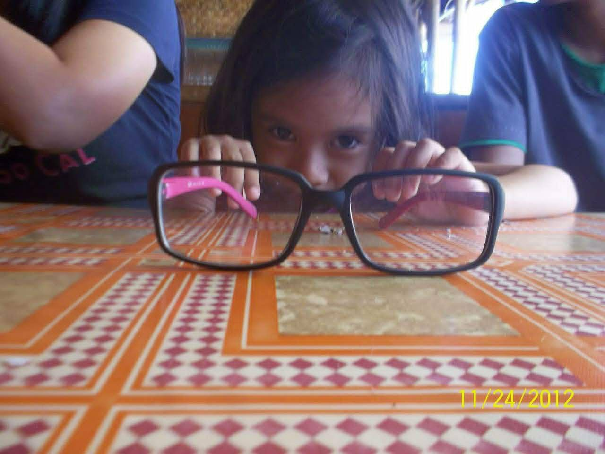
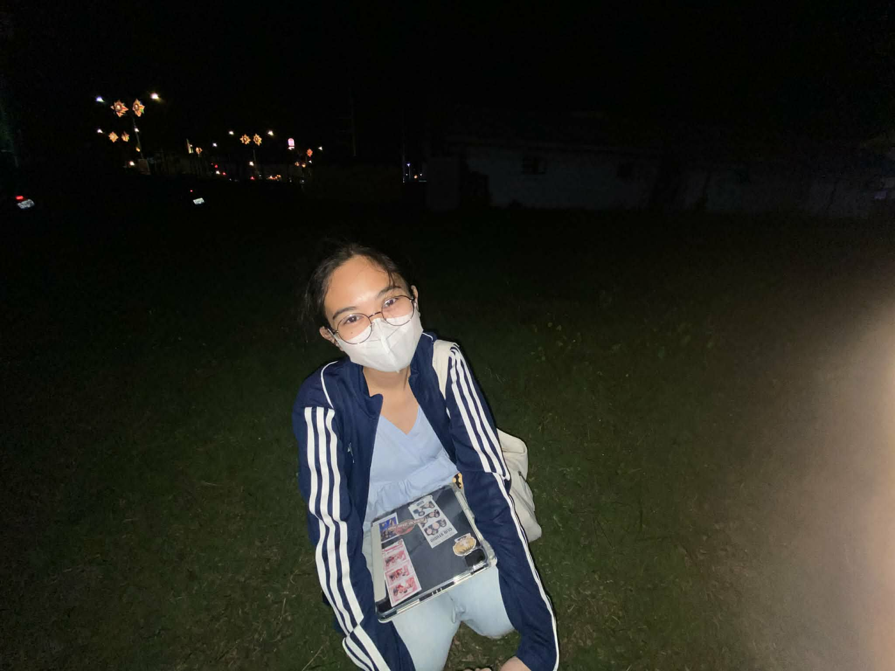
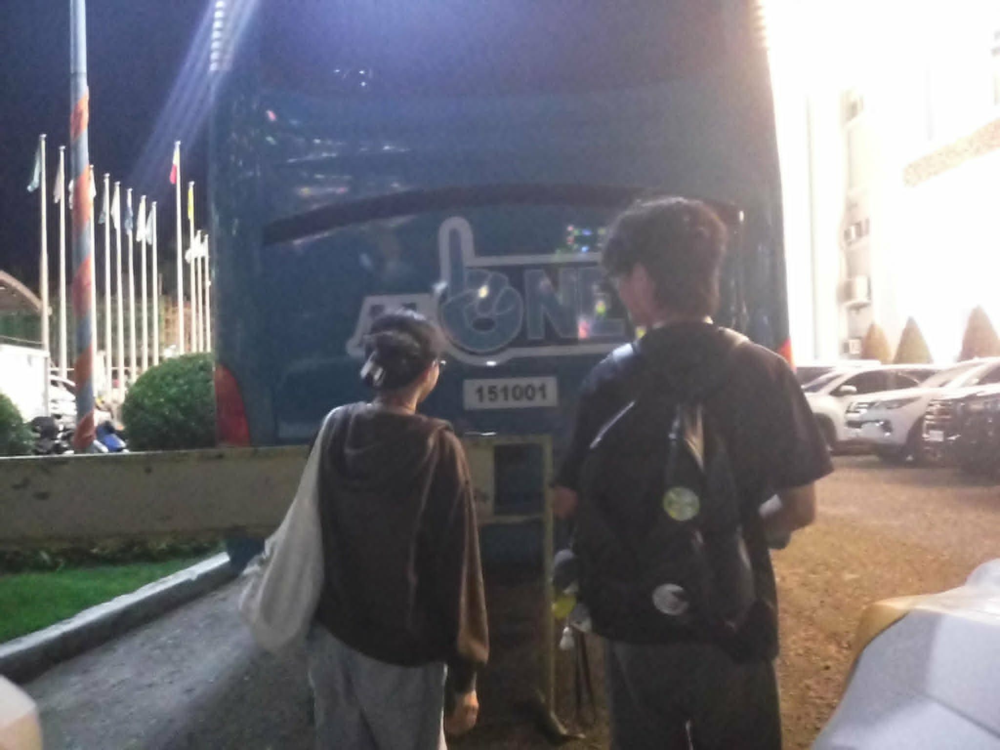

Happy Birthday po LUVLUVV! 🍵

Tadaaaaaa, this is my gift for you hehe......

My adorable Jawea Padilla- chrrr HAHAHHA.NGL po luvluv this has to be my top favorite baby pic nimooo, vv adorablee

I've already guessed ito reaction nimo after seeing this mwhehehehe

Remember nung summer break, nag imagine tayo if ever na magkita yung current self nakon and yung kid jawia, HAHHAHA that was so adorableeee. Like we talked about that Jawia would want to be carried palagi, and like Jawia would want to have loadssss of candies and she would want us to play and read her a book or patiently listen to her as she read's her book.

I added this because you are just so adorable, and precious.

I just added my favorite pics of you, well they're all favorite.

Happy Birthday, my precious star
For You ❤️
Happy birthday Luvluv. I made this right now to show you how much I am thankful for all of your efforts, your kindness, and your love. I wish I could be there with you right now to celebrate your once in a year speacial day, but soon mwehhehe. I love you and I will forever continue to do so. We really have so much in common, like this for instance, we both don't like celebrating birthdays but we love the gifts HAHHAHAHHA. I really want to be there right now, but I guess I'd just have to wait:p. Never ever forget that you will always be loved, I'm sorry for the times na naging busy ako and couldn't be there for you. Writing this feels like I'm talking to you and I love the feeling, yes I love the feeling of talking t yuu, r just yapping or listeninggg. I really love every single moment with you. I'm so sorry huhu ang random na ng mga nasulat nakon and alot of things I want to say to you po luvluv. Pero one thing na I want you to know po is that you'll have times na you think na di nanaman nimo kaya and you're confused na on what to do and you just feel so tired of everyth ng. But do remember na you are strong, you are brave, yo've handled worse before, and I will be here to always keep you together until you can handle it on your own na. I love you so much, always remember I am on your side, and I will always be here for you. Happy birthday again, my precious star. I hope you have a wonderful day and a wonderful year ahead of you. I love you so much, and I will always love you. You are the best thing that ever happened to me, and I am so grateful to have you in my life. Happy birthday, po luvluv! ( daming I love yous HAHAHHA, but yezzzz) I LOVE YOUUUUUU.